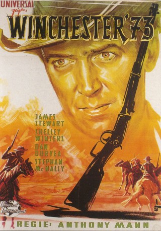
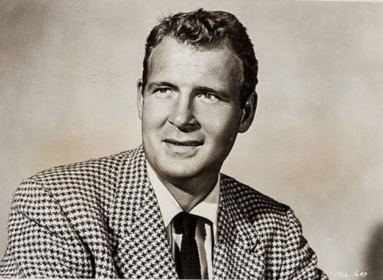
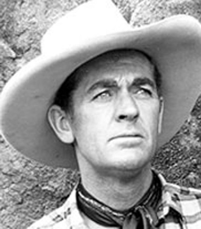

#3893 Winchester 73
Alternativ: Winchester '73
 
 IMDB-Wertung: 7.7 / 10
IMDB-Wertung: 7.7 / 10  Metascore: 0
Metascore: 0 
Mit Dutch Brown hat Lin McAdam noch eine Rechnung offen: Nach einem Preisschießen raubte der Bandit Lins Gewehr - eine legendäre Winchester, Baujahr 1873. Während McAdam auf der Jagd nach seinem Eigentum ist, wandert die begehrte Büchse durch viele Hände: vom Waffenschmuggler bis zum Sioux-Häupling - aber niemanden bringt das Gewehr Glück...
Jahr: 1950
Dauer: 88 Minuten
FSK: 12
Land: USA Studio: Universal International ®Tonspuren:
Untertitel:
Auflösung: 720p (1280x720) Größe: 4802 MB
Genre: Drama, Western
Regisseur: Anthony Mann
Drehbuch: Anika Decker
Soundtrack:
Darsteller:
 James Stewart als Lin McAdam
James Stewart als Lin McAdam Shelley Winters als Lola Manners
Shelley Winters als Lola Manners- Dan Duryea als Waco Johnny Dean
- Millard Mitchell als High Spade
 John McIntire als Joe Lamont
John McIntire als Joe Lamont Will Geer als Wyatt Earp
Will Geer als Wyatt Earp Jay C. Flippen als Sgt. Wilkes
Jay C. Flippen als Sgt. Wilkes Rock Hudson als Young Bull
Rock Hudson als Young Bull- Steve Brodie als Wesley
 Tony Curtis als Doan
Tony Curtis als Doan James Best als Crater
James Best als Crater- Edmund Cobb als Target Watcher , uncredited
 Steve Darrell als Bat Masterson , uncredited
Steve Darrell als Bat Masterson , uncredited John Doucette als Roan Daley , uncredited
John Doucette als Roan Daley , uncredited- Jimmy Hawkins als Boy at Store Window , uncredited
- Forrest Taylor als Target Clerk , uncredited
- Tony Taylor als Boy , uncredited
 Ray Teal als Marshall Noonan , uncredited
Ray Teal als Marshall Noonan , uncredited- Stephen McNally als Dutch Henry Brown
-  Charles Drake als Steve Miller
- John Alexander als Jack Riker
 James Millican als Wheeler
James Millican als Wheeler- Abner Biberman als Latigo Means
 Victor Adamson als Townsman , uncredited
Victor Adamson als Townsman , uncredited Robert Anderson als Basset , uncredited
Robert Anderson als Basset , uncredited- Mel Archer als Bartender , uncredited
 Ray Bennett als Charles Bender , uncredited
Ray Bennett als Charles Bender , uncredited Chet Brandenburg als Townsman , uncredited
Chet Brandenburg als Townsman , uncredited Roy Bucko als Townsman , uncredited
Roy Bucko als Townsman , uncredited- Frank Chase als Cavalryman , uncredited
- Frank Conlan als Contest Clerk in Saloon , uncredited
 Tex Cooper als Shooting Contestant , uncredited
Tex Cooper als Shooting Contestant , uncredited- Victor Cox als Townsman , uncredited
- Bonnie Kay Eddy als Bonnie Jameson , uncredited
- Bill Gillis als Minor Role , uncredited
- Chick Hannan als Spectator , uncredited
- Timmy Hawkins als Boy at Rifle Shoot , uncredited
- Carol Henry als Dudeen , uncredited
- Gary Jackson als Gary Jameson , uncredited
 Jack Kenny als Townsman , uncredited
Jack Kenny als Townsman , uncredited- Norman Kent als Buffalo Hunter , uncredited
 Ethan Laidlaw als Stationmaster , uncredited
Ethan Laidlaw als Stationmaster , uncredited-  Ted Mapes als Bartender , uncredited
- Gregg Martell als Mossman - Cavalryman , uncredited
- Bill McKenzie als Boy at Rifle Shoot , uncredited
- Jennings Miles als Stagecoach Driver , uncredited
- Virginia Mullen als Mrs. Jameson , uncredited
- Norman Ollestad als Stable Boy , uncredited
- Larry Olsen als Boy at Rifle Shoot , uncredited
- Bud Osborne als Man , uncredited
Datei: X:\HD-Western-1900-1959\Winchester 73 (1950, FSK12, 1280x720).mkv seit 29.06.2016
Festplatte: HD Eastern+Western
 Es gibt insgesamt 98 Filme in der Gruppe 'HD-Western-1900-1959'
Es gibt insgesamt 98 Filme in der Gruppe 'HD-Western-1900-1959'